5th International Conference on Intelligence, Innovation and Humanity
SHAPING A TRANSFORMATIVE GLOBAL FUTURE
27 | 28 | 29 JANUARY 2027
SCIENCE | MEDIA | LITERATURE | SOCIAL SCIENCE | TECHNOLOGY
Organised by
MES Keveeyam College
Valanchery, Kerala, India
NAAC Re-accredited with A+ Grade (3.44)
In association with Kerala State Higher Education Council, Thiruvananthapuram
International Conference
INSIGHT 5.0 is an international conference organised by MES KVM College, bringing together academicians, researchers, industry experts, and students from diverse disciplines to explore the intersection of intelligence, innovation, and human values. The conference aims to foster interdisciplinary dialogue, knowledge sharing, and collaborative research to address emerging global challenges. It will highlight the potential of intelligent technologies, creative thinking, and innovative solutions in simplifying everyday life, enhancing societal well-being, and driving meaningful transformation. By bridging technological advancements with human needs and values, INSIGHT 5.0 seeks to inspire impactful ideas and collaborations that contribute to a more inclusive, progressive, and transformative global future.
About the College
MES Keveeyam College, Valanchery, is a government-aided institution under the MES and affiliated with the University of Calicut. Since 1981, it has been a hub of quality education for rural Malappuram. The college offers 11 UG, seven PG, and one integrated PG program, along with UGC-sponsored add-on courses.
The Departments of Chemistry, Commerce, Physics, and English are recognized research centres, supported by over 10 research guides, offering a robust environment for advanced studies.
Ranked 51st in NIRF (2016–17) and accredited with an ‘A+’ grade by NAAC, the campus hosts a DST-FIST-funded research complex and is part of the MHRD’s Study in India program—making it an excellent venue for academic events
SPEAKERSSubjects
SPEAKERS

Kerala State Higher Education Council (KSHEC)

Government of Kerala

Vatakara

Adam Mickiewicz University, Poznań, Poland
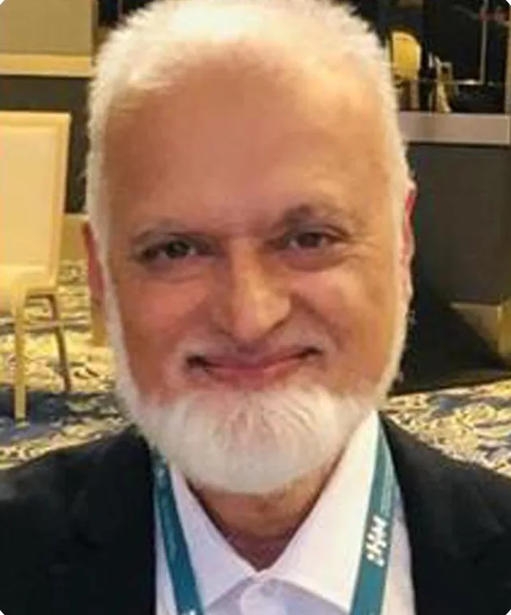
Novel Global Community Educational Foundation
Australia
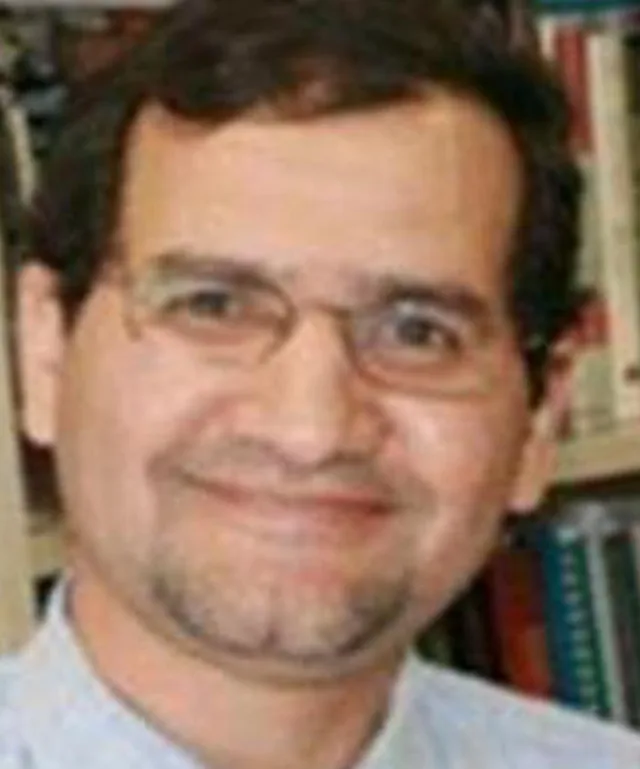
Taif University, Kingdom of Saudi Arabia
General Manager, Tsuno GmbH, Heidelberg

MediaOne news channel
Kerala, India

Secretary, Purogamana Kala Sahitya Sangham
Kerala, India

Harvard Medical School, USA

Indian Institute of Technology, Palakkad

Japan

Jawaharlal Nehru University, New Delhi


King Abdullah International Medical Research Center
Riyadh, Kingdom of Saudi Arabia
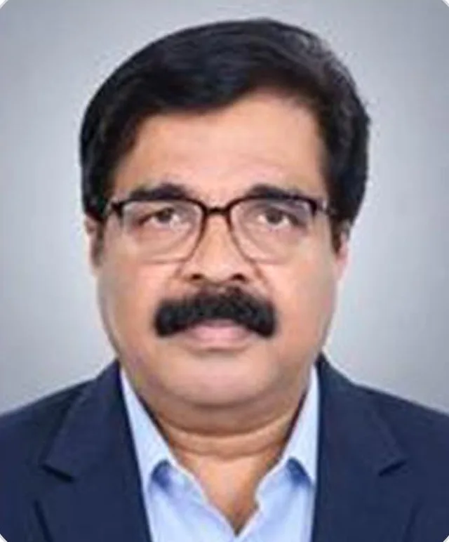
Kerala University of Digital Sciences, Innovation and Technology

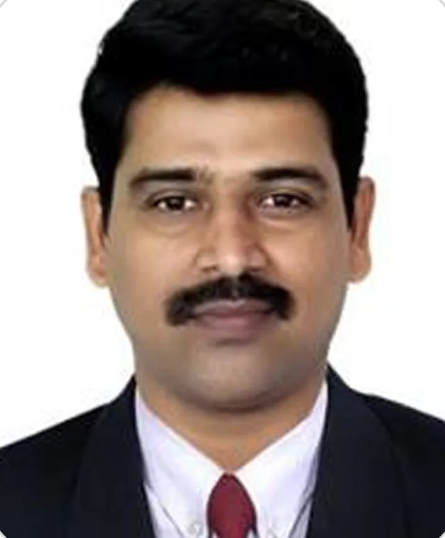
Pondicherry University

CHRIST Deemed to be University, Bangalore
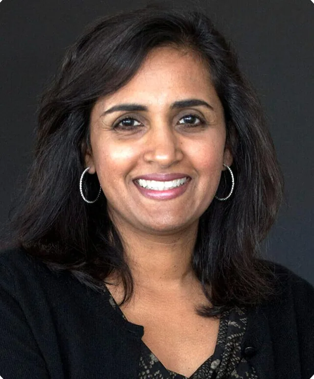

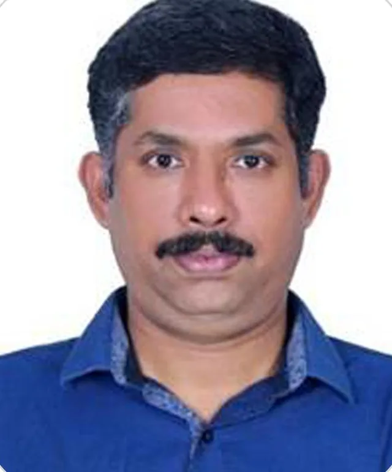
ICMR – National Institute of Nutrition Hyderabad

University of Calicut

United Kingdom
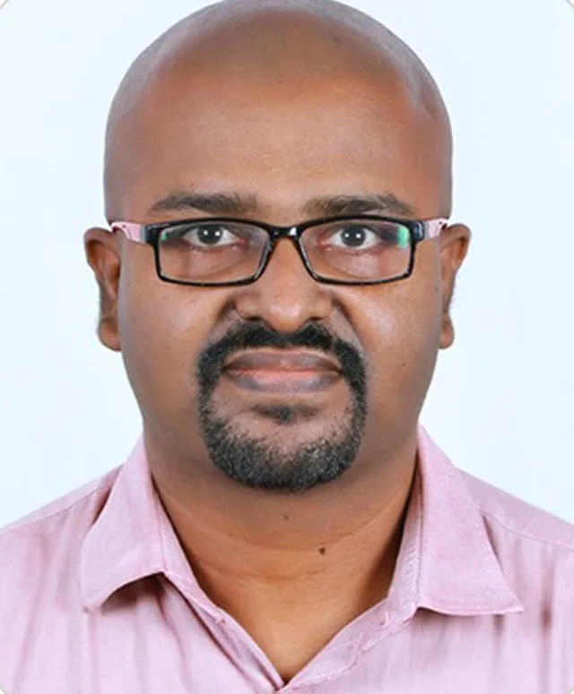
Pondicherry University

College of Health Sciences, Gulf Medical University, Ajman, United Arab Emirates
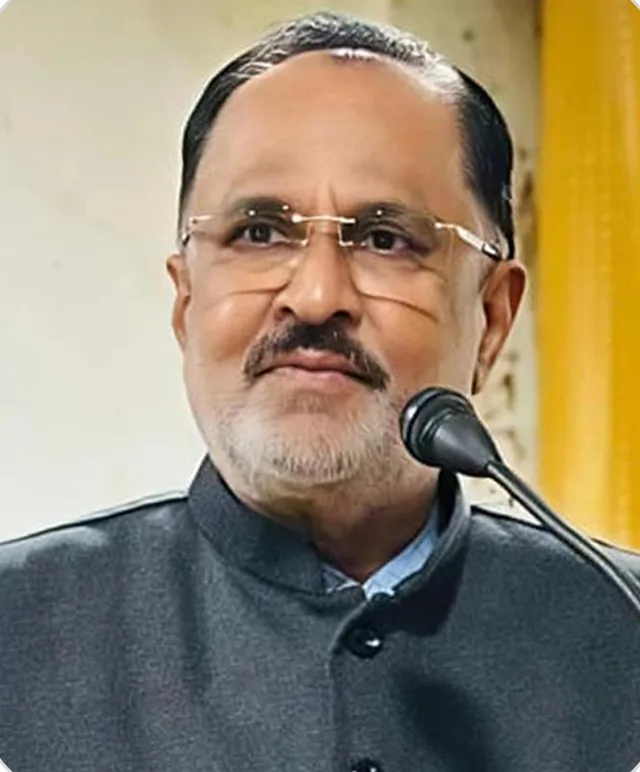
Kerala Academy of Sciences
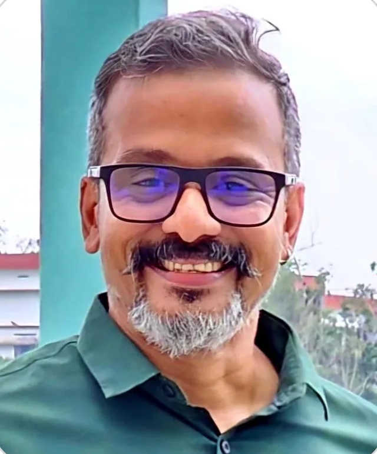
Sree Sankaracharya University of Sanskrit, Kalady

MES Mampad College (Autonomous)

DBT Research Associate
University of Calicut
& Member of Kerala state Board for Wild life

India

Department of Physics
Cochin University of Science and Technology (CUSAT) Kochi

University of Calicut
Pramod Raman
Editor-in-ChiefMediaOne news channelKerala, India
Pramod Raman is a distinguished Indian journalist, media professional, editor and Malayalam writer with over three decades of experience in print and broadcast journalism. He has made significant contributions to the development of television journalism in Kerala, particularly through his association with leading Malayalam media organisations. His professional career began in 1990 with Deshabhimani, followed by his association with Asianet, where he presented the channel’s first news bulletin in 1995, marking a significant milestone in the history of private television broadcasting in Kerala.
He subsequently served in editorial roles at IndiaVision, Malayalam’s first 24-hour news channel, and Manorama News, where he worked as Senior Coordinating Editor. In 2021, he joined MediaOne News Channel as Editor and has since been associated with its editorial leadership. His extensive experience encompasses news reporting, editorial management, television news presentation, current-affairs programming and media communication.
Beyond journalism, Pramod Raman is an accomplished Malayalam short-story writer whose literary works include Rathimathavinte Puthran, Drishtichaver, Maranamass, Katha and Babari Masjidil Pakshikal Anayunnu. His engagement with literature and cinema reflects his wider interest in society, culture and human experiences.
With his rich professional experience in journalism, editorial leadership and literature, Pramod Raman brings valuable perspectives on the changing media landscape, the role of journalism in democratic society, freedom of expression and the ethical responsibilities of contemporary media.
Prof. Dr. rer. nat. Abd-ElAziem Farouk Gad
Department of BiotechnologyTaif University, Kingdom of Saudi ArabiaGeneral Manager, Tsuno GmbH, Heidelberg
Prof. Dr. rer. nat. Abd-ElAziem Farouk Gad is an internationally experienced academician, researcher and biotechnology professional with expertise in molecular biology, microbial biotechnology and biomolecular engineering. He currently serves as Professor in the Department of Biotechnology at Taif University, Kingdom of Saudi Arabia, and holds a leadership position at Tsuno GmbH, Heidelberg, Germany. He obtained his doctoral degree (Dr. rer. nat.) from Martin Luther University Halle-Wittenberg, Germany, in 1995, followed by postdoctoral research at the Leibniz Institute of Plant Genetics and Crop Plant Research (IPK), Gatersleben, Germany.
His distinguished academic career includes international appointments at the University of Brunei Darussalam, Humboldt University, Berlin, and the International Islamic University Malaysia, where he founded and coordinated the Biomolecular Engineering Research Unit. Through these positions, he has contributed to teaching, research supervision, institutional development and international academic collaboration, particularly in biotechnology and related interdisciplinary fields.
His research interests encompass molecular biology, microbial biotechnology, enzyme technology, biomolecular engineering and industrial bioprocess development. His research contributions include studies on microbial enzyme production, phytate-degrading enzymes, cell immobilisation and bioreactor technologies, with applications in food biotechnology and industrial processing. He has also been actively involved in scientific innovation and technology development, with his research and inventions receiving recognition at international invention exhibitions.
Combining extensive academic experience with research leadership and industry engagement, Prof. Gad has contributed to strengthening the relationship between scientific research and practical technological applications. His professional work reflects a commitment to biotechnology innovation, interdisciplinary research and the development of science-based solutions to industrial and societal challenges.
Dr. Shadab Ali Khan
Research ScientistDepartment of Nanomedicine ResearchKing Abdullah International Medical Research CenterKing Saud bin Abdul Aziz University of Health SciencesRiyadh, Kingdom of Saudi Arabia
Dr. Shadab Ali Khan is a researcher in biotechnology, nanoscience and biomedical research, with an academic background in biochemistry and biotechnology. He obtained his M.Sc. in Biochemistry from Amravati University, Maharashtra, in 2003, and completed his Ph.D. in Biotechnology at the National Chemical Laboratory, Pune, in 2012. Following his doctoral studies, he worked as a Postdoctoral Research Associate at the Indian Institute of Science Education and Research (IISER), Pune, and subsequently received a Postdoctoral Research Associateship from the Council of Scientific and Industrial Research (CSIR), New Delhi.
His research career encompasses the synthesis, characterisation and biomedical applications of nanomaterials, particularly metal and metal-oxide nanoparticles, graphene-based materials and biologically synthesised nanostructures. His research has explored innovative approaches to nanoparticle production using microorganisms, enzymes and plant-derived materials, with applications in antimicrobial technologies, biomedical engineering and drug-related research.
Dr. Khan has contributed to peer-reviewed research publications in scientific journals, including Materials Research Bulletin, Beilstein Journal of Nanotechnology, Chemical Engineering Journal, PLOS ONE and RSC Advances. His research includes studies on the biosynthesis of metal and metal-oxide nanoparticles, graphene functionalisation and the development of nanomaterials for biomedical applications.
Through his research experience and international academic collaborations, Dr. Khan contributes to the advancement of nanomedicine and biotechnology, particularly in exploring the potential of nanomaterials for healthcare applications. His work reflects the growing convergence of biotechnology, materials science and biomedical research in addressing contemporary scientific and healthcare challenges.
Prof. Mohammad Amjad Kamal
ProfessorNovel Global Community Educational FoundationAustralia
Prof. Mohammad Amjad Kamal is an internationally active academician and biomedical researcher whose work spans biochemistry, neuroscience, pharmacology and medicinal chemistry. He holds a Ph.D. and is a Fellow of the Royal Australian Chemical Institute. His academic career includes research collaborations and appointments in Australia, Saudi Arabia and the United States. He has served as a Distinguished Adjunct Professor at the King Fahd Medical Research Center, King Abdulaziz University, Jeddah, contributing to biomedical research.
His research interests include neurodegenerative disorders, particularly Alzheimer’s and Parkinson’s diseases, diabetes, cancer biology, enzymology, toxicology and drug discovery. His work examines biochemical mechanisms associated with disease and explores therapeutic compounds. He has participated in research collaborations with scientists associated with the National Institute on Aging, National Institutes of Health, USA, on experimental approaches to Alzheimer’s disease.
Prof. Kamal is the Founder and Director of the Novel Global Community Educational Foundation (NGCEF), Australia. The foundation promotes academic networking, research collaboration and educational initiatives, connecting scholars across disciplines and countries. He has also contributed to scholarly publishing through editorial roles in scientific journals and has supported research mentorship and communication.
Through his research, publications and international collaborations, Prof. Kamal contributes to biomedical science and interdisciplinary knowledge exchange. His professional work reflects a commitment to strengthening global research partnerships and translating scientific findings into applications in healthcare and human well-being.
Dr. Gopakumar V
Consultant, Knowledge CentreKerala University of Digital Sciences,Innovation and Technology
Dr. Gopakumar V is an accomplished academician and Library and Information Science professional with approximately 38 years of experience in academic librarianship, digital knowledge management and higher education, including 26 years of service in colleges across Kerala. He currently serves as Consultant at the Knowledge Centre of Digital University Kerala, where he has also headed the Knowledge Centre and served as University Librarian. He holds a Ph.D. in Library and Information Science from Mangalore University, along with earlier qualifications in science and library science.
Previously, he served as University Librarian and Head of the Department of Library and Information Science at Goa University. During his tenure, he contributed to the development of academic library services and library science education. He also served as a member of the University's Academic Council and as Chairman of the Board of Studies in Library and Information Science, contributing to academic planning and curriculum development.
His areas of expertise include digital libraries, information literacy, institutional repositories, digital content development, research metrics, indexing and scholarly communication. An elected member of DELNET (Developing Library Network), he is actively involved in promoting resource sharing and strengthening academic information networks. He is also a frequent resource person for professional development programmes, workshops and training sessions on digital content development, citation metrics, indexing and research data analysis.
Through his academic leadership, professional contributions and training initiatives, Dr. Gopakumar has played an important role in advancing modern library services and technology-enabled knowledge dissemination. His work reflects a sustained commitment to strengthening digital scholarship, research support systems and access to academic information.
K. E. N. Kunhahammed
Malayalam writerSecretary, Purogamana Kala Sahitya SanghamKerala, India
K. E. N. Kunhahammed is a distinguished Malayalam writer, cultural critic, intellectual and public speaker known for his contributions to contemporary literary and social discourse in Kerala. He served as Head of the Department of Malayalam at Farook College, Kozhikode, from where he retired in 2011. He is one of the secretaries of the Purogamana Kala Sahitya Sangham, a prominent progressive writers' and artists' organisation in Kerala, and has also served as a member of the Executive Committee of the Kerala Sahitya Akademi.
With around thirty books to his credit, his literary contributions encompass cultural criticism, social analysis, essays and reflections on contemporary society. His writings explore significant themes such as the Kerala renaissance, secularism, caste, communalism, fascism, religion, democracy and the relationship between literature and society. His notable works include Swargam, Narakam, Paralokam, Samuham, Sahithyam, Samskaram, Purogama Sahithya Prasthanam: Charithravum Varthamanavum and Keraleeya Navodhanathinte Charithravum Varthamanavum.
As a public intellectual and speaker, K. E. N. has actively participated in literary discussions, cultural debates and public forums, offering critical perspectives on social transformation, cultural identity and democratic values. His writings and interventions encourage critical thinking and dialogue on contemporary social and political realities.
In recognition of his outstanding contribution to Malayalam literature and cultural thought, he received the Kerala Sahitya Akademi Award for Comprehensive Contribution for 2024, announced in June 2025. He has also received several literary and cultural honours, including the Kuttippuzha Award, Gurudarshana Award, Abu Dhabi Sakthi Award and Thayatt Award.
Dr. Abdul Vahid K.
Head of the Department and Assistant Professor of Islamic HistoryMES Mampad College (Autonomous)Nilambur, Kerala, India
Dr. Abdul Vahid K. is an academician and researcher specialising in Islamic history, Indian history and culture, medieval history, Middle Eastern culture and politics, and the history of Kerala. He currently serves as Head of the Department and Assistant Professor of Islamic History at MES Mampad College (Autonomous), Nilambur, Kerala. He completed his postgraduate studies in Islamic Studies at the SAFI Institute of Advanced Study, securing first rank at the University of Calicut.
With a strong interest in historical research and cultural studies, his academic work explores the history and contributions of Muslim communities, particularly in the Malabar region. His research areas include Mappila resistance movements, anti-colonial literature, Kerala's cultural history and the influence of European Renaissance on Arabic short stories. He has undertaken a UGC Minor Research Project on minority politics, examining the role of Kerala Muslims and religious scholars in political developments.
Dr. Vahid has presented research papers at national and international seminars and contributed scholarly articles to journals and conference proceedings. His documented publications include works on anti-colonial literature in Kerala and the influence of the European Renaissance on Arabic short stories. He has also contributed to Anecdotes: Connecting Dots in History (2022). He serves as a section editor at Islamonweb and is actively involved in academic discussions and historical research.
As Head of the Department, he promotes academic collaboration and interdisciplinary engagement. He has contributed to institutional partnerships, including an academic MoU with the Department of Islamic Studies, Government Degree College, Sopore. His work reflects a commitment to historical scholarship, cultural understanding and research-oriented higher education.
Dr. M. Nagalakshmi
Professor, Department of EnglishVels Institute of Science, Technology andAdvanced Studies (VISTAS), Chennai
Dr. M. Nagalakshmi is an accomplished academician, researcher and research supervisor with extensive experience in English language teaching, literature and interdisciplinary studies. She currently serves as Professor in the Department of English, School of Languages, at Vels Institute of Science, Technology and Advanced Studies (VISTAS), Chennai. She holds postgraduate and doctoral qualifications in English, along with an MBA, B.Ed., M.Phil. and professional qualifications in TEFL/TESOL. She has also qualified the UGC-NET examination and brings approximately 23 years of teaching experience, including 11 years of international teaching experience in Muscat, Oman.
Her areas of academic interest include English literature, language and linguistics, literary criticism, cultural studies, gender discourse and contemporary literary theories. Her research explores diverse themes in literature, including identity, diaspora, gender, postcolonialism, disability representation and social inequalities. She has collaborated with doctoral scholars on research examining disability and ableism in children's fantasy fiction, particularly representations in J. K. Rowling's Harry Potter series.
Dr. Nagalakshmi has guided numerous research scholars, including ten doctoral scholars, nine of whom have received awards, and has supervised 13 M.Phil. scholars. She has also served as an external examiner for doctoral thesis evaluations and viva voce examinations at various universities. Her scholarly contributions include research articles, book chapters and academic publications in national and international platforms.
In recognition of her contributions to teaching and research, she has received several honours, including the Academic Excellence Awards from VISTAS in 2021 and 2022, the Rukmani Lakshmipathi Teaching Excellence Award and the Best Teacher Award in 2023. She continues to contribute to higher education through research supervision, academic writing and scholarly engagement.
Prof. M. Elayaraja
Professor, Department of Physical Education and SportsPondicherry UniversityR.V. Nagar, Kalapet, Puducherry
Prof. M. Elayaraja is an accomplished academician, researcher and sports science professional with approximately 25 years of experience in physical education and sports sciences. He currently serves as Professor in the Department of Physical Education and Sports at Pondicherry University, Puducherry. He completed his Ph.D. in Physical Education from Annamalai University in 2009, where he also began his academic career before joining Pondicherry University. His professional experience combines teaching, research supervision, sports training and academic administration.
His major research interests include the physiology of sports training, exercise science, predictors of human performance, fundamental movement skills and the application of yoga for physical and mental health and wellness. His research explores the effects of specialised training programmes on athletic performance, physical fitness and physiological responses. He has supervised 15 Ph.D. scholars and 35 M.Phil. scholars and has co-authored more than 32 journal articles in Scopus-indexed publications.
Prof. Elayaraja has received several prestigious recognitions for his contributions to teaching and research. These include the Best Ph.D. Thesis Award from Annamalai University in 2009, Pondicherry University's Best Teacher Awards for 2012, 2015, 2016, 2017 and 2018, and the UGC Research Award for 2016–2018. He also received the Best Presenter Award at the International Conference for Sports Sciences held at Ton Duc Thang University, Vietnam, in 2019.
His contributions extend to innovation in sports science, including a granted international patent for an artificial intelligence-based heart rate monitoring system for sports training. Through his research, academic leadership and professional engagement, Prof. Elayaraja continues to contribute to advancements in sports performance, exercise physiology and health-oriented physical education.
Dr. Dhinu M R
Professor & DirectorDepartment of Physical Education & SportsSree Sankaracharya University of SanskritKalady
Dr. Dhinu M. R. is an accomplished academician, sports educator and researcher with extensive experience in physical education, sports science and health promotion. He currently serves as Professor and Director of the Department of Physical Education and Sports at Sree Sankaracharya University of Sanskrit, Kalady, Kerala. His academic career spans more than two decades, combining university teaching, sports administration, research and student development.
He began his professional career as a Guest Lecturer in Physical Education at Christ College, Irinjalakuda, where he served from 1999 to 2004. In 2004, he joined Sree Sankaracharya University of Sanskrit as Assistant Director of Physical Education. Through his subsequent appointments as Deputy Director and Head of the Department, he took on increasing academic and administrative responsibilities before assuming his present position as Professor and Director. His professional journey reflects sustained involvement in strengthening physical education and sports activities in higher education.
His academic interests include physical fitness, sports training, exercise physiology, health education, wellness and the relationship between physical activity and overall well-being. He has actively contributed to academic discussions and professional development programmes as an invited speaker and resource person. His engagements include a webinar on prehabilitation as a strategy in fighting the coronavirus in 2020, highlighting the importance of preventive health practices and physical preparedness.
Through his teaching, research activities and institutional leadership, Dr. Dhinu M. R. contributes to promoting sports education, healthy lifestyles and the integration of physical activity into holistic human development. His professional interests emphasise the role of physical education in improving health, fitness and quality of life.
Dr. Shobi Veleri
Scientist-F (Senior Deputy Director)ICMR – National Institute of NutritionHyderabad
Dr. Shobi Veleri is a senior scientist at the Indian Council of Medical Research (ICMR), serving as Scientist-F (Senior Deputy Director) at the ICMR–National Institute of Nutrition, Hyderabad. He is associated with the Drug Safety Division, where his work focuses on scientific research in biomedical and health-related fields.
He secured the first rank in his M.Sc. in Physiology from the University of Calicut. In 2006, he joined the National Institutes of Health (NIH), USA, where he pursued research at two leading institutes. At the National Institute of Mental Health, he investigated the neural circuits involved in general anaesthesia using Drosophila as a model organism. Subsequently, at the National Eye Institute, he studied inherited blindness associated with ciliopathies, contributing to the understanding of the molecular mechanisms of genes such as Cc2d2a and Reep6.
His current research focuses on the molecular analysis of genetic and metabolic diseases using animal models, with particular attention to retinal degeneration. His research integrates physiology, molecular biology and disease modelling to investigate the mechanisms underlying complex disorders.
Through his scientific work at ICMR and his research experience at the National Institutes of Health, Dr. Veleri contributes to advancing knowledge in biomedical science, genetic disorders and disease-related research. He was a research student under Prof. Peter Hegemann, whose pioneering contributions to optogenetics were recognised with the 2026 Nobel Prize in Physiology or Medicine.
Dr. Sandeep Das
Zoological Society of London EDGE FellowDBT Research AssociateUniversity of CalicutAnd Member of Kerala state Board for Wild life
Dr. Sandeep Das is a herpetologist and conservation biologist associated with the Department of Zoology, University of Calicut. He is a Zoological Society of London (ZSL) EDGE Fellow and a DBT Research Associate. His research focuses on biodiversity documentation, amphibian and reptile ecology, species discovery and wildlife conservation, with particular emphasis on the Western Ghats, one of the world's significant biodiversity hotspots.
Dr. Das began his field research with birds in 2006 and has been actively studying the amphibians and reptiles of the Western Ghats since 2010. Through extensive field investigations and collaborative research, his teams have contributed to the discovery and scientific description of more than 20 new species of amphibians, lizards and snakes. These contributions have expanded scientific understanding of the region's distinctive and often threatened herpetofaunal diversity.
As an EDGE Fellow and EDGE Hero awardee, he is actively involved in the conservation of the endangered Mahabali, or purple, frog (Nasikabatrachus sahyadrensis), an evolutionarily distinct amphibian endemic to the Western Ghats. His conservation work integrates research on the species' distribution, habitat requirements and threats with community outreach and awareness initiatives. He has also contributed to advocacy efforts proposing the recognition of the purple frog as Kerala's state frog.
Dr. Das is a co-author of the Global Amphibian Assessment 2 and serves as a trustee of the Aranyakam Nature Foundation. His work brings together scientific research, biodiversity assessment and community participation to strengthen conservation efforts and promote the protection of threatened species and fragile ecosystems.
Dr. Mintu Porel
Associate ProfessorDepartment of ChemistryIndian Institute of Technology Palakkad, India
Dr. Mintu Porel is an Associate Professor in the Department of Chemistry at the Indian Institute of Technology (IIT) Palakkad, where she joined as an Assistant Professor in 2017. She is a researcher in the field of organic and polymer chemistry, with expertise in the design, synthesis and functional applications of novel organic macromolecules. Her academic and research career reflects a strong commitment to advancing innovative materials and exploring their applications in interdisciplinary areas.
She obtained her Ph.D. in Chemistry from the University of Miami, USA, followed by postdoctoral research at Columbia University and Cornell University. These research experiences provided her with an international academic background and opportunities to work in advanced areas of chemical sciences. At IIT Palakkad, she leads research activities focused on developing functional molecular and polymeric materials with specialised structural and application-oriented properties.
Her research group investigates the design and synthesis of sequence-defined macrocycles, water-soluble fluorescent polymers and molecular sensing systems. These materials are explored for potential applications in healthcare, energy and environmental monitoring. Her research combines synthetic chemistry, molecular design and materials development to address emerging scientific and technological challenges.
Dr. Porel is a recipient of the prestigious Ramanujan Fellowship. She was also featured in the Royal Society of Chemistry's Polymer Chemistry Emerging Investigator Series, recognising her contributions to polymer research. Her distinctions include the Early Career Award at the International Conference on Smart Materials for Sustainable Technology in 2020 and the Outstanding Woman Researcher in Chemistry Award in 2024. Through her research, academic leadership and mentoring, she contributes to the development of advanced materials and the advancement of chemical sciences.
Dr. Tanmoy Saha
Instructor, Department of MedicineHarvard Medical SchoolUSA
Dr. Tanmoy Saha is an Instructor in the Department of Medicine at Harvard Medical School, Boston, USA. His research lies at the intersection of chemistry, bioengineering and biomedical science, with a focus on developing innovative approaches to address challenges in disease treatment. His interdisciplinary work integrates molecular design, advanced materials and biological systems to explore new possibilities in targeted therapeutic interventions.
He obtained his Ph.D. in Organic Chemistry from the Indian Institute of Science Education and Research (IISER) Pune in 2017. Following his doctoral studies, he completed his postdoctoral training at Harvard Medical School, where he further developed his research expertise in interdisciplinary biomedical applications. His academic journey reflects the integration of a strong foundation in chemical sciences with advanced research in medicine and bioengineering.
Dr. Saha's research interests include immunotherapy, drug delivery, nanotechnology and cellular communication. His work explores how engineered materials and molecular systems can be used to improve the precision and effectiveness of therapeutic strategies. By combining principles of organic chemistry and bioengineering, his research addresses emerging challenges in targeted treatment and the development of innovative biomedical technologies.
He serves as the Principal Investigator of a project funded by the Melanoma Research Alliance, focusing on bioengineering approaches for targeted immunotherapy in melanoma. This research aims to advance strategies that improve the targeting and effectiveness of cancer immunotherapy. Through his interdisciplinary research and academic contributions, Dr. Saha works towards translating advances in chemistry and engineering into innovative approaches for biomedical research and therapeutic development.
Dr. Roza Szweda
Associate ProfessorCenter of Advanced TechnologiesAdam Mickiewicz University, Poznań, Poland
Dr. Róża Szweda is an Associate Professor at the Center for Advanced Technologies, Adam Mickiewicz University, Poznań, Poland, where she leads the Programmable Polymers research team. Her research focuses on the design and development of advanced synthetic polymers with precisely controlled molecular structures and properties. She works at the intersection of polymer chemistry, materials science and biomimetic systems, exploring how synthetic macromolecules can reproduce the structural and functional characteristics of biological molecules.
She received her Ph.D. in 2015 for her research on polymer–peptide conjugates at the Centre of Polymer and Carbon Materials of the Polish Academy of Sciences. She subsequently undertook postdoctoral research under Professor Jean-François Lutz at the Institut Charles Sadron, CNRS, Strasbourg, France. In 2020, she established an independent research group at the Łukasiewicz–PORT Polish Center for Technology Development in Wrocław. She obtained her habilitation in 2023, further strengthening her academic and research profile.
Her research interests include sequence-defined and stereocontrolled synthetic polymers, particularly polyurethanes and oligocarbamates. Her work investigates the relationship between polymer sequence, molecular architecture, folding and functional properties, with the broader objective of developing synthetic materials that mimic the behaviour of proteins. These investigations contribute to emerging approaches in programmable macromolecular design and advanced functional materials.
Dr. Szweda has been recognised as a Rising Star in Polymer Science by Progress in Polymer Science and is a recipient of a European Research Council (ERC) Starting Grant. Through her research leadership and contributions to polymer chemistry, she advances the development of precisely engineered synthetic materials and expands the possibilities of biomimetic polymer science.
Dr. Siddhartha Chakraborti
Assistant Professor of EnglishAligarh Muslim UniversityIndia
Dr. Siddhartha Chakraborti is an Assistant Professor in the Department of English at Aligarh Muslim University (AMU), India. His academic interests encompass English literature, decolonisation, digital humanities and contemporary literary studies. His research engages with questions of colonial history, cultural identity and the evolving relationship between literature, society and technology.
He holds a Ph.D. and an M.A. in English from Jawaharlal Nehru University, New Delhi, and a B.A. (Honours) from Presidency College, Kolkata. His doctoral research examined the processes and implications of decolonisation in the Indian context. He has also undertaken international research fellowships through programmes such as the German Academic Exchange Service (DAAD) at Eberhard Karls University of Tübingen, Germany, and the United Kingdom–India Education and Research Initiative (UKIERI).
Dr. Chakraborti has presented his research at more than thirty academic conferences across Asia, Europe and North America. He has also organised over forty seminars and workshops, including six international conferences, contributing to academic exchange and interdisciplinary collaboration. His scholarly work includes approximately twenty publications in his areas of research.
He is a founding member of the Digital Humanities Alliance for Research and Teaching Initiatives (DHARTI) and serves as Secretary of the Aligarh chapter of the English Language Teachers' Association of India (ELT@I). He has also contributed to the introduction of a course on digital literatures at Aligarh Muslim University. Through his teaching, research, academic publications and institutional initiatives, Dr. Chakraborti promotes the integration of literary scholarship, digital technologies and interdisciplinary approaches in higher education.
Dr. P. Mohan
Professor (Retired), Department of Commerce &Management Studies, and Former Pro Vice ChancellorUniversity of Calicut
Dr. P. Mohan is a retired Professor of the Department of Commerce and Management Studies at the University of Calicut and a former Pro-Vice-Chancellor of the University. With extensive experience in higher education and academic administration, he has contributed to the development of commerce and management education through his teaching, research and institutional leadership. His academic career reflects a sustained engagement with the advancement of higher education and the promotion of scholarly activities.
During his tenure as Pro-Vice-Chancellor, Dr. Mohan was involved in various academic and institutional initiatives. He presided over and addressed university-level academic programmes, seminars and conferences, contributing to discussions on higher education, research and academic development. His administrative experience provided opportunities to engage with faculty members, researchers and academic institutions on matters relating to university governance and institutional progress.
His research interests are primarily centred on commerce, finance and related areas of management studies. He has contributed to empirical research examining wealth creation among Indian investors in initial public offerings (IPOs). This area of research explores investment outcomes and the financial implications of participation in primary capital markets, contributing to the understanding of investor behaviour and wealth generation.
Dr. Mohan's academic and administrative contributions reflect his commitment to commerce education, financial research and university development. His experience as a professor and former Pro-Vice-Chancellor provides a valuable perspective on the relationship between academic scholarship, institutional leadership and the evolving needs of higher education in India.
Dr. Chinchu C
Assistant ProfessorCentre for Women’s StudiesPondicherry University
Dr. Chinchu C. is an Assistant Professor at the Centre for Women’s Studies, Pondicherry University, and a Consulting and Forensic Psychologist, Research Consultant, Podcaster and Writer with over 15 years of experience in training and science communication. He holds a Ph.D. in Psychology and postgraduate qualifications in Applied Psychology and Sociology. He has also qualified UGC-NET in multiple disciplines, including Psychology, Women’s Studies and Comparative Study of Religions.
His research interests encompass mental health, disability, gender and social inclusion. His scholarly contributions include journal publications, book chapters and accessible knowledge resources addressing mental health advocacy, disability rehabilitation, vocational training and the professional regulation of psychology in India. He has received several honours, including the Global Citizen Psychologist Citation 2025 from the American Psychological Association (Division 52), Researchers in the Global South Award and Small-Scale Events Grant (SPSSI, 2022), State and Local Level Policy Work Grant (SPSSI, 2023), and SIPS Commendation Awards (2023 and 2025). He also won a global paper competition on Open Science and Sustainable Development sponsored by UNESCO, UN MGCY and the Journal of Science Policy and Governance in 2022.
Actively involved in the American Psychological Association, World Association for Sexual Health and Society for the Improvement of Psychological Science, he contributes to open knowledge initiatives and the People's Science Movement of India. He has translated WAS declarations on Sexual Rights and Sexual Pleasure, and Jamovi statistical software into Malayalam. He is Editor-in-Chief of the Manashasthra Varthamanam Psychology Newsletter and serves on the editorial board of the Luca Malayalam science portal. Through ASCENT, podcasts, videos and tutorials, he promotes mental health awareness and accessible psychological knowledge. He has also served as visiting faculty at NUALS and IGNOU.
Prof. Pratyusha Tummala-Narra
Professor, Counseling, Developmental, andEducational Psychology DepartmentBoston College, Chestnut Hill, MA, United States
Prof. Pratyusha (Usha) Tummala-Narra is a Professor in the Department of Counseling, Developmental, and Educational Psychology at Boston College, Massachusetts, USA. She is also a clinical psychologist in independent practice. Her academic and professional work brings together clinical psychology, psychoanalytic theory and cultural studies, with particular attention to the influence of social and cultural contexts on psychological experiences and mental health. She received her doctorate in Clinical Psychology from Michigan State University.
Her research and scholarship focus on immigration, trauma, race, culture and culturally informed psychoanalytic psychotherapy. She examines how cultural identities, migration experiences, historical inequalities and social environments shape psychological well-being and therapeutic relationships. Her work emphasises the importance of developing culturally responsive approaches to psychotherapy that recognise the diverse experiences and backgrounds of individuals and communities.
Prof. Tummala-Narra is the author of Psychoanalytic Theory and Cultural Competence in Psychotherapy (American Psychological Association, 2016) and editor of Trauma and Racial Minority Immigrants: Turmoil, Uncertainty, and Resistance (2021). These publications contribute to scholarly discussions on cultural competence, psychological trauma, immigration and the application of psychoanalytic perspectives in clinical practice.
She has served on several American Psychological Association committees and presidential task forces, including the Presidential Task Force on Immigration, the Task Force on Re-envisioning the Multicultural Guidelines and the Presidential Task Force on Trauma and Grief. She is also a consulting editor of Psychoanalytic Dialogues and American Psychologist. Her recognition among the world's top 2% most-cited scholars in the Stanford University ranking reflects the international reach of her research contributions.
Dr. Sudarshan R. Kottai
Assistant Professor, Department of Humanities andSocial Sciences, IIT PalakkadDistinguished Fellow, Centre for Equity Studies, New Delhi
Dr. Sudarshan R. Kottai is an Assistant Professor in the Department of Humanities and Social Sciences at the Indian Institute of Technology (IIT) Palakkad and a Distinguished Fellow at the Centre for Equity Studies, New Delhi. Trained as a clinical psychologist, his academic work integrates psychology, social sciences and critical health studies. He completed his doctoral research at IIT Hyderabad and has previously taught psychology at JAIN University, CHRIST (Deemed to be University) and O.P. Jindal Global University.
His research focuses on critical mental health, particularly the everyday practices of community mental healthcare in India, mental health policy and the right to care. He examines the social, cultural and institutional dimensions of mental health, with particular attention to the experiences of marginalised communities and gender and sexual minorities. His work engages with questions of mental health accessibility, social justice, inclusion and the development of community-based approaches to psychological care.
Dr. Kottai's scholarly contributions have appeared in reputed publications, including Economic and Political Weekly and the Indian Journal of Medical Ethics. He also serves as the Book Reviews Editor of the international journal Feminism & Psychology, contributing to academic discussions at the intersection of psychology, gender and social theory.
In July 2025, he coordinated the Global Initiative of Academic Networks (GIAN) course titled Culture and Health: Ethnographic Perspectives and Methods at IIT Palakkad. His forthcoming book, Mental Health and Critical Community Care: Perspectives from India, further explores the relationship between mental health, community care and social contexts. Through his teaching, research and editorial contributions, Dr. Kottai advances interdisciplinary scholarship on mental health, equity and inclusive healthcare practices.
Prof. Eiji Masai
Department of Materials Science and BioengineeringNagaoka University of TechnologyJapan
Prof. Eiji Masai is a Professor in the Department of Materials Science and Bioengineering at Nagaoka University of Technology, Japan. His research expertise lies in applied microbiology and biochemistry, particularly the microbial degradation of lignin-derived aromatic compounds. His work explores the biochemical and genetic mechanisms through which microorganisms break down complex plant-derived substances, contributing to a better understanding of microbial metabolism and the sustainable utilisation of renewable biological resources.
For more than 25 years, Prof. Masai and his research group have investigated Sphingobium sp. strain SYK-6, a bacterium isolated from pulp effluent in 1987. Their research has focused on identifying and characterising the aromatic catabolic pathways involved in the degradation of lignin-derived compounds. Through molecular and biochemical investigations, his group has examined the genes, enzymes and transport systems responsible for the breakdown and utilisation of these complex molecules.
His research contributes to understanding the role of soil bacteria in the natural recycling of aromatic compounds and the broader processes involved in carbon cycling. By clarifying the microbial mechanisms of lignin degradation, his work also supports the development of biotechnological approaches for converting lignin, an abundant renewable plant resource, into valuable chemicals and materials.
Prof. Masai's research has involved international scientific collaboration, including work with institutions such as the US National Renewable Energy Laboratory. His contributions connect fundamental microbial research with applications in biotechnology, environmental science and renewable resource utilisation. Through his academic leadership and sustained research on bacterial lignin degradation, he advances scientific understanding of microbial biochemistry and the potential of biological systems in sustainable material development.
Prof. (Dr.) G. M. Nair
Former DirectorJawaharlal Nehru Tropical Botanic Garden andResearch Institute (JNTBGRI), Palode
Prof. (Dr.) G. M. Nair is a distinguished plant biotechnologist and tissue culturist who has made significant contributions to plant biotechnology, medicinal plant research and botanical sciences. He formerly served as Director of the Jawaharlal Nehru Tropical Botanic Garden and Research Institute (JNTBGRI), Palode, Thiruvananthapuram, an institution dedicated to research, conservation and the sustainable utilisation of tropical plant resources. His academic and research career has been closely associated with the advancement of plant science and biotechnology in Kerala.
He joined JNTBGRI as its fifth Director in December 2001 and served in that position until mid-2005, after which he returned to his parent department. During his tenure, he provided renewed direction to research activities in medicinal plant biotechnology and promoted the development of the institute's botanical resources. Particular attention was given to strengthening the Arboretum and Medicinal Plants Garden, supporting the institute's objectives in plant conservation, research and the preservation of valuable medicinal species.
Prof. Nair has also contributed to scientific and academic administration through several important leadership roles. He served as President of the Kerala Academy of Sciences and headed the Central Laboratory for Instrumentation and Facilitation (CLIF) at the University of Kerala. These responsibilities reflect his involvement in promoting scientific research, strengthening institutional facilities and supporting interdisciplinary academic activities.
In recognition of his contributions to plant science, a newly identified plant species, Humboldtia nairiana, was named in his honour in 2026, marking his 75th birth anniversary. This botanical recognition adds to his contributions to the field and reflects the continuing relevance of his work in plant biotechnology and botanical research. Through his scientific career and institutional leadership, Prof. Nair has contributed to the development of plant science and medicinal plant research.
Dr. M K Jayaraj
Emeritus Professor Department of Physics Cochin University ofScience and Technology, Kochi,Former Vice Chancellor Calicut University
Prof. (Dr.) M. K. Jayaraj is an Emeritus Professor in the Department of Physics, Cochin University of Science and Technology (CUSAT), Kochi, and the former Vice-Chancellor of the University of Calicut. He is a distinguished physicist and one of the pioneers of Optoelectronics and Nanophotonics research in India. He obtained his M.Sc. in Physics (1984) and Ph.D. in Physics (1990) from CUSAT. He has also undertaken advanced research assignments at the Physical Research Laboratory, Ahmedabad, ENEA, Italy, the University of Pierre and Marie Curie, France, and Oregon State University, USA. He has served as a visiting professor at the Tokyo Institute of Technology, Japan.
His research expertise encompasses optoelectronic materials and devices, nanostructured materials, transparent electronics, ferroelectric thin films, photovoltaic devices, thin-film transistors, chemical and biosensors, and two-dimensional materials. He is the Founder Director of the Centre of Excellence in Advanced Materials at CUSAT, an interdisciplinary research centre established in 2010. During his academic career, he has supervised 29 doctoral theses and 31 M.Phil. dissertations, contributing significantly to advanced materials research and the development of young researchers.
His distinguished contributions have earned him several prestigious recognitions, including the UGC Mid-Career Award (2017), Dr. S. Vasudev Award from KSCSTE (2019) and the Material Research Society of India (MRSI) Medal (2019). His work has also contributed to research innovations and patents in advanced materials and electronic devices. Through his leadership, international research collaborations, teaching and scientific contributions, Prof. Jayaraj continues to play an important role in advancing materials science and higher education.
Dr. Titus K Mathew
Retired Professor and Adjunct FacultyDepartment of PhysicsCochin University of Science and Technology (CUSAT) Kochi
Dr. Titus K. Mathew is a Retired Professor and Adjunct Faculty in the Department of Physics, Cochin University of Science and Technology (CUSAT), Kochi. He is a distinguished theoretical physicist with extensive academic and research experience in Gravitation, Cosmology and Theoretical Physics. He obtained his Ph.D. in Physics (1999) and M.Sc. in Physics (1986) from CUSAT, following his undergraduate studies at the University of Kerala.
His research interests focus on dark energy, the accelerated expansion of the universe, emergent gravity, cosmological models and neutrino physics. His work explores the relationship between gravity and thermodynamics, particularly the possibility of understanding gravity as an emergent phenomenon and explaining the evolution of the universe through fundamental thermodynamic principles. He has published extensively in reputed international journals, including Physical Review D, European Physical Journal C, Journal of Cosmology and Astroparticle Physics and Classical and Quantum Gravity.
During his academic career, he served as Professor and Associate Professor at CUSAT, and previously as Senior Lecturer in various Government Colleges in Kerala. He has held several important academic and research leadership positions, including Honorary Director of the Centre for Particle Physics, Coordinator of the IUCAA Centre for Astronomy Research and Development (ICARD) and coordinator of the Inter-University Centre for Kerala Legacy on Astronomy and Mathematics (IUCKLAM). He has also been associated with the Fermi National Accelerator Laboratory (Fermilab), USA, through collaborative research in neutrino physics, and served as Visiting Associate at IUCAA, Pune.
Through his research, academic leadership, doctoral supervision and international collaborations, Dr. Mathew has made significant contributions to theoretical physics and cosmological research.
Dr. Reshmi V Suresh
Assistant ProfessorDepartment of Professional StudiesCHRIST Deemed to be University, Bangalore
Dr. Reshmi V. Suresh is an Assistant Professor in the Department of Professional Studies, CHRIST (Deemed to be University), Bengaluru. She holds a Ph.D. in Entrepreneurship Development from the School of Management Studies, Cochin University of Science and Technology (CUSAT), which she pursued under the UGC Junior Research Fellowship (JRF) scheme under the guidance of Prof. Dr. S. Rajitha Kumar. Her doctoral research focused on street entrepreneurship at tourism destinations and the development of a livelihood framework.
Her research interests encompass entrepreneurship development, social entrepreneurship, tourism entrepreneurship, digital transformation, financial inclusion and livelihood development. Her scholarly work explores the role of entrepreneurial motivation, resource utilisation, digital payment adoption and entrepreneurial capabilities in strengthening the livelihoods of micro-entrepreneurs and street vendors. She has contributed to research publications in reputed academic journals, including Discover Sustainability, addressing the relationship between entrepreneurial motivation, entrepreneurial bricolage and mobile payment technologies in improving micro-entrepreneurs' livelihoods.
Dr. Reshmi has also made contributions to research innovation and intellectual property development, with several published and granted patents in areas including financial behaviour analysis, foreign market entry strategies, digital marketing and investment planning. Her academic engagement extends beyond teaching and research to research coordination, faculty development and academic capacity building. She has been actively involved in organising research-oriented workshops and quality improvement programmes, particularly in research methodology, systematic literature reviews and scholarly publishing.
Through her interdisciplinary research, academic contributions and commitment to research advancement, Dr. Reshmi continues to contribute to contemporary discussions on entrepreneurship, innovation, financial inclusion and socio-economic development.
Dr. Shibi C.
Assistant ProfessorDepartment of HindiUniversity of Calicut
Dr. Shibi C. is an Assistant Professor in the Department of Hindi, University of Calicut, Kerala. He is an accomplished academic with a multidisciplinary educational background and a specialisation in Hindi Drama and Theatre. His academic qualifications include M.A. in Hindi, M.Phil., Ph.D., B.Ed., UGC-NET and SET, along with an M.A. in Sociology and a Postgraduate Diploma in Translation.
His academic interests encompass Hindi language and literature, drama, theatre and translation studies. He has experience teaching undergraduate and postgraduate courses and is associated with the academic activities of the Department of Hindi at the University of Calicut. His academic profile reflects an engagement with literary studies and the interdisciplinary dimensions of language, society and culture.
Dr. Shibi also contributes to research and higher education through his academic and research activities. His diverse academic training and teaching experience support the promotion of Hindi studies and literary scholarship.
Dr. Suneel Kateriya
Professor, School of BiotechnologyJawaharlal Nehru University, New Delhi
Prof. Suneel Kateriya is a distinguished biotechnologist and Professor at the School of Biotechnology, Jawaharlal Nehru University (JNU), New Delhi. He has held several important academic and administrative positions at JNU, including Deputy Director and Director (Research and Development), and currently serves as Dean, School of Biotechnology. He is also associated with the University's interdisciplinary programmes in Ayurveda Biology and Systems Medicine.
His primary research interests include OptoBiotechnology, Optogenetics, Cilia Biology, Ciliopathies and Channelopathies. He completed his doctoral research at the University of Regensburg, Germany, focusing on the identification, expression and characterisation of archaeal-type opsins in Chlamydomonas reinhardtii. He subsequently undertook postdoctoral research at Humboldt University, Germany, and Columbia University, USA, working on sensory rhodopsins and cardiac sodium channels.
Prof. Kateriya has received several prestigious recognitions, including the Innovative Young Biotechnologist Award (IYBA 2016) from the Department of Biotechnology, Government of India, the Indian Science Congress Young Scientist Award (2009), the Ratna Phadke Young Scientist Award (2010) and the Association of Microbiologists of India Young Scientist Award (2011). His international distinctions include the Max Planck Visiting Fellowship and EMBO Travel Award.
With 52 scholarly publications, including research articles, reviews and invited book chapters, he has made significant contributions to biotechnology and optogenetics. He is a life member of several professional scientific societies and an elected member of the National Academy of Sciences, India. Prof. Suneel Kateriya was a research student under Prof. Peter Hegemann, whose pioneering contributions to optogenetics were recognised with the 2026 Nobel Prize in Physiology or Medicine.
Dr. Gopinath Madeswaran
Assistant Professor, Department of Optometry & Vision SciencesCollege of Health Sciences, Gulf Medical UniversityAjman, United Arab Emirates
Dr. Gopinath Madeswaran is a research-driven optometrist and educator with a PhD in Optometry and more than a decade of academic, clinical and research experience in India and the United Arab Emirates. He currently serves as Assistant Professor in the Department of Optometry & Vision Sciences, College of Health Sciences, Gulf Medical University, Ajman, where he is Semester Coordinator for the BSc Optometry programme. He is a Fellow of the American Academy of Optometry (FAAO).
He obtained his PhD in Optometry (2018–2022) and Master of Optometry (2015–2017) from the Manipal Academy of Higher Education (MAHE), Manipal, and his Bachelor of Optometry from the Elite School of Optometry, Chennai. He also holds the Fellowship Diploma in British Dispensing Optics (FBDO) from the Association of British Dispensing Opticians, UK. His earlier appointments include Assistant Professor at Acchutha Eye Care & Institute of Optometry, Erode, and clinical roles at Sankara Nethralaya, Chennai.
His research interests include low vision rehabilitation, age-related macular degeneration and perimetry, visual function assessment, myopia and paediatric refractive error, glaucoma care, public and occupational eye health, and optometric education. He is the author of 20 published papers, including articles in BMJ Open, BMC Public Health and Graefe’s Archive for Clinical and Experimental Ophthalmology. During his doctoral training he secured government-funded research grants from SERB and BIRAC.
He has delivered more than 25 invited lectures on evidence-based practice and research methodology, and is the Founder-Director of Opto Research Consultancy Services. He is a recipient of the Best Optometry Faculty Award 2023 (Optometry Council of India and Bausch & Lomb India) and the Distinguished Alumni Award 2024 (MAHE).

Dr. Bindhu Nair
Head of Library ServicesRCSI Medical University of Bahrain
Dr. Anoop Kadan
University of Southampton,United Kingdom
PUBLICATIONS & REGISTRATION
All accepted abstracts will be published in the Conference Proceedings with an ISBN.
Selected research papers will be published as chapters in an edited book with an ISBN.
| CATEGORY | INDIA | FOREIGN |
|---|---|---|
| Students | 750 INR | 8 USD |
| PhD Scholars | 1500 INR | 16 USD |
| Faculty | 2000 INR | 21 USD |
| Industry | 2500 INR | 26 USD |
• 25% discount for online presentations**
IMPORTANT DATES
Last date of Abstract Submission : 08 December 2026
Last date of Registration : 08 January 2027
Last date of Full Paper Submission : 18 January 2027
ACCOUNT DETAILS
Beneficiary: PRINCIPAL MES KEVEEYAM COLLEGE
Account No. 9913000100020311
Bank: Punjab National Bank, Valanchery
IFSC: PUNB0991300
Our Coordinators
Chief Patron
 Dr. P A Fazal GhafoorPresident MES Kerala
Dr. P A Fazal GhafoorPresident MES KeralaPatrons
 Jb. K K KunjimoideenGeneral Secretary, MES Kerala
Jb. K K KunjimoideenGeneral Secretary, MES Kerala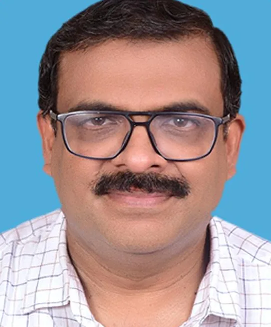
Jb. O C SalahudheenTreasurer, MES Kerala Dr. K A HashimCorporate Manager, MES Kerala
Dr. K A HashimCorporate Manager, MES Kerala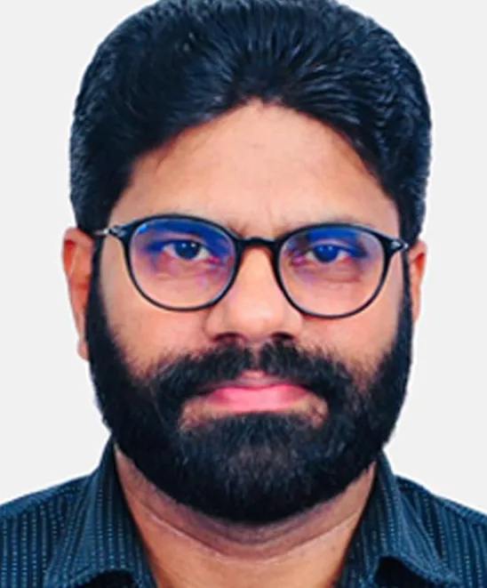
Abdul Latheef KGST Joint CommissionerMalappuram Dr. Mohamedali PSecretaryMES Keveeyam College
Dr. Mohamedali PSecretaryMES Keveeyam College Prof. Parayil MoideenkuttyTreasurerMES Keveeyam College
Prof. Parayil MoideenkuttyTreasurerMES Keveeyam CollegeChairman, Coordinators
Joint Coordinators
IQAC Coordinator
International Advisory Committee
- Prof. Mohammad Amjad KamalProfessor, Novel Global Community Educational Foundation, Australia
- Prof. Dr. rer. nat. Abd-ElAziem Farouk GadGeneral Manager, Tsuno GmbH, Heidelberg
- Dr. Achuthsankar. S. NairVice Chairman, Kerala State Higher Education Council (KSHEC)
- Dr. Tanmoy SahaInstructor, Harvard Medical School, USA
- Dr. Roza SzwedaAssociate Professor, Adam Mickiewicz University, Poznań, Poland
- Prof. Eiji MasaiNagaoka University of Technology, Japan
- Dr. Suneel KateriyaProfessor, Jawaharlal Nehru University, New Delhi
- Prof. Pratyusha Tummala-NarraBoston College, Chestnut Hill, MA, United States
- Dr. Reshmi V SureshAssistant Professor, CHRIST Deemed to be University, Bangalore
- Prof. Shajid P PVice Principal, MES Keveeyam College, Valanchery
- Dr. Vinod Kumar K PFormer Principal, MES Keveeyam College, Valanchery
Organizing Committee
- Dr. Ahlam Abdul Aziz
- Dr. Aneesha P
- Dr. Hasan Basari
- Dr. Liya
- Dr. Sabira O
- Farhana Nazrin P A
- Fathima Suhara
- Dinil S
- Mubashira K
- Muhammed Sharook Khan
- Naseela Ubaid
- Rajani K K
- Ahmed Hubab N
- Salil Suresh
- Shahana Sherin K
Gallery
Insight 2025
Previous edition highlights

Contact Us
Address
Vendalloor, Valanchery,
Kerala 676552
Office: 0494 - 2642670
Principal: 0494-2644380
www.meskeveeyamcollege.ac.in
Opening Hours
Mon - Fri
8:00 am – 8:00 pm
Saturday
9:00 am – 7:00 pm